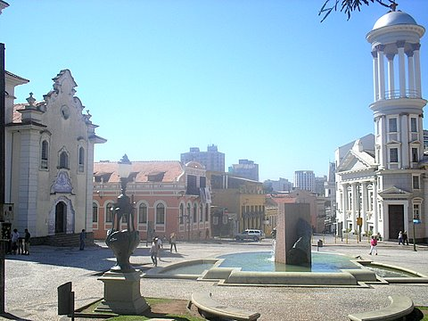

Sexta Santa

A voz e a cadência de Roberto Piva se apoderam de meus pensamentos.
Sonolentos e vazios ônibus disputam espaço, nas sonolentas e vazias avenidas de Curitiba, com carros desgovernados por drogados adolescentes da alta sociedade.
Nesta sagrada sexta em que até as prostitutas se resguardam em respeito a sabe-se lá o que, testemunho a revelação que o vento traz. Vulgares copos de plástico manchados por um vagabundo vinho paranaense são as provas de que bêbados sem mãe passaram a noite heresiando.
As ruas estão vazias, meu espírito não.
Mas sou menos que uma carola prostituta, pois em pleno feriado cristão estou indo trabalhar, cumprindo minha sina de moderno escravo assalariado.
Escrito por volta de 2005, quando, numa sexta-feira santa eu estava indo trabalhar muito contrariado apenas pra ser alguém de plantão na sede da empresa. Esses pensamento me assolaram ali no Largo da Ordem, por volta das 7h00 da madrugada.